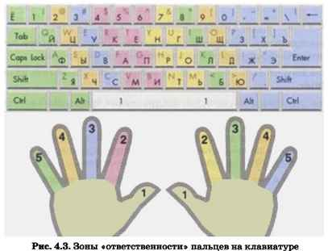
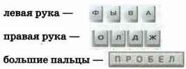
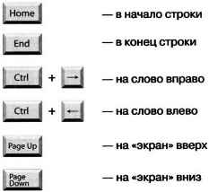
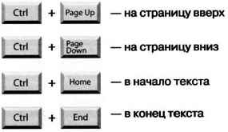
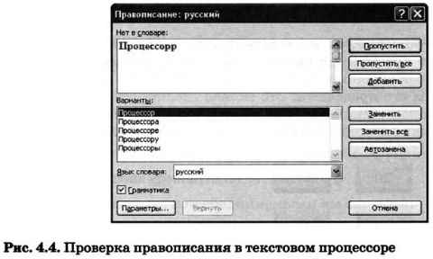
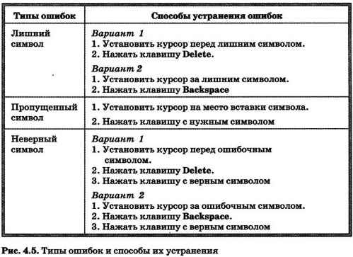
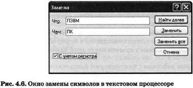
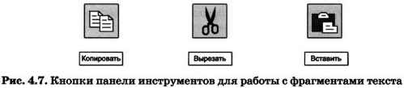

4.2.1. Набор (ввод) текста
Ключевые слова:
- набор (ввод) текста
- клавиатурный тренажёр
- редактирование (правка) текста
- режим вставки/замены
- проверка правописания
- поиск и замена
- фрагмент
- буфер обмена
Подготовка документа на компьютере состоит из таких этапов, как набор, редактирование и форматирование. В этом параграфе мы рассмотрим два первых этапа.
Набор (ввод) текста осуществляется с помощью клавиатуры. Навык квалифицированного клавиатурного письма сегодня считается социальным, общекультурным. Он важен для более эффективного оформления результатов учебной работы, а также для использования в повседневной жизни каждым выпускником школы. Изучить расположение букв на клавиатуре и освоить навыки ввода текста проще всего в процессе работы с клавиатурным тренажёром.
Рекомендуем вам «скачать» из Единой коллекции цифровых образовательных ресурсов (http://sc.edu.ru/) и установить на свой домашний компьютер клавиатурный тренажёр «Руки солиста» (128669). В зависимости от усилий, затраченных на его освоение, вы сможете сформировать один из следующих навыков:
- элементарный навык десятипальцевой печати (уровень 1);
- устойчивый навык десятипальцевой печати с использованием слепого метода (уровень 2);
- навык квалифицированного клавиатурного ввода на основе десятипальцевой печати с использованием слепого метода печати на всех клавишах клавиатуры (уровень 3).
Клавиатура условно делится на две части — для правой и левой рук. Каждый палец «закреплён» за определёнными клавишами (рис. 4.3).
При работе на клавиатуре необходимо придерживаться следующих рекомендаций.
Руки располагайте над вторым основным рядом клавиатуры. Пальцы сгибайте так, будто в каждой руке держите яблоко. Кончиками пальцев слегка касайтесь клавиш:
Удары пальцев по клавишам должны быть чёткими, отрывистыми и ритмичными.
Ударяющий по клавише палец не должен прогибаться, а другие пальцы не должны подниматься со своих мест.
После удара по любой клавише зоны «ответственности» палец должен возвращаться на своё основное место.
Если вы почувствуете напряжение или усталость, сделайте в работе небольшой перерыв.
При вводе текста придерживайтесь следующих правил:
- не следите за концом строки: как только он будет достигнут, курсор автоматически перейдёт на начало следующей строки;
- для того чтобы перейти к вводу нового абзаца, нажмите клавишу Enter;
- там, где это нужно, используйте прописные буквы (Shift + буква);
- соседние слова отделяйте одним пробелом;
- знаки препинания (запятую, двоеточие, точку, восклицательный и вопросительный знаки) пишите слитно с предшествующим словом и отделяйте пробелом от следующего слова;
- кавычки и скобки пишите слитно с соответствующими словами;
- тире выделяйте пробелами с двух сторон;
- дефис пишите слитно с соединяемыми им словами.
При подготовке математических и физических текстов часто возникает необходимость вставлять формулы, содержащие дроби, корни и специальные знаки. Для этого используются специальные редакторы формул, встроенные в текстовые процессоры.
4.2.2. Редактирование текста
При редактировании (правке) текста его просматривают, чтобы убедиться, что всё правильно, исправляют обнаруженные ошибки (например, в правописании) и вносят необходимые изменения.
Переместить курсор к обнаруженной ошибке можно при помощи мыши или клавиш управления курсором (курсорных стрелок). Для быстрого перемещения курсора в пределах экрана можно использовать следующие клавиши и сочетания клавиш:
Если текст большой, то на экране будет видна только его часть, а весь он будет храниться в памяти компьютера. Существует режим прокрутки, позволяющий быстро вывести на экран части текста, находящиеся за его пределами. Это можно сделать с помощью полос прокрутки, расположенных справа и внизу окна документа. Для этой цели также можно использовать следующие комбинации клавиш:
При перемещении курсора по экрану документ остаётся неподвижным, а при прокрутке неподвижным остаётся курсор.
Текстовый редактор всегда находится в одном из двух режимов — вставки или замены. Для их переключения используется клавиша Insert (Ins).
При работе в режиме вставки существующий текст сдвигается вправо, освобождая место вводимому тексту.
При работе в режиме замены символ, стоящий за курсором, заменяется символом, вводимым с клавиатуры.
Когда текст вводится впервые, а также при добавлении в текст символа слова или предложения удобнее пользоваться режимом вставки. При замене одного слова другим можно воспользоваться режимом замены.
Современные текстовые процессоры снабжены средствами проверки правописания. В простейшем случае текстовый процессор хранит словарь языка и каждое вводимое пользователем слово сравнивает со словами этого словаря. Бели введённого слова в словаре нет, то процессор его отмечает (например, красной волнистой линией) и предлагает варианты замены (рис. 4.4).
Более мощные текстовые процессоры не только находят слова в словаре, но и различают словоформы, анализируют грамматическую структуру предложений. Такие программы подсказывают пользователю расстановку знаков препинания, помогают правильно построить фразу.
Всё многообразие ошибок, допускаемых при вводе текста, может быть сведено к трём типам: лишний символ, пропущенный символ и ошибочный символ. Способы устранения этих ошибок описаны на рис. 4.5.
Для того чтобы найти все ошибки, необходимо понимать смысл слов автора. Это компьютеру не по силам. Вот почему для современного человека так важны грамотность и хорошее знание родного языка. Что касается возможностей компьютера, то их следует использовать для избавления человека от утомительной однообразной работы.
Например, если необходимо в большом тексте заменить аббревиатуру «ПЭВМ» на «ПК», то лучше всего воспользоваться имеющейся в текстовых процессорах функцией поиска и замены (рис. 4.6).
В текстовых процессорах предусмотрена операция отмены предыдущего действия. Для её реализации текстовый процессор постоянно фиксирует последовательность производимых пользователем действий по изменению текста.
Специальной командой Отменить пользователь может вернуть документ к состоянию, которое было несколько шагов назад.
Отказаться от произведённых отмен можно с помощью команды Повторить.
В работе над документом могут участвовать несколько пользователей. Современные текстовые процессоры позволяют запомнить, просмотреть и распечатать исправления, внесённые каждым из них.
4.2.3. Работа с фрагментами текста
При редактировании можно работать не только с отдельными символами, но и с целыми фрагментами текста.
Фрагмент — произвольное количество следующих один за другим символов текста: один или несколько символов, слово, строка, предложение, абзац или даже весь документ.
Предварительно фрагмент должен быть выделен. Для этого можно установить указатель мыши в начало нужного фрагмента и, держа кнопку мыши нажатой, протянуть указатель до его конца.
Выбор фрагмента можно отменить щелчком в произвольном месте рабочей области окна.
Выделенный фрагмент можно:
- удалить из текста и стереть из памяти;
- вырезать — удалить из текста, но поместить в специальный раздел памяти — буфер обмена;
- копировать в буфер обмена (сам фрагмент остаётся на своём прежнем месте, а его точйая копия помещается в буфер обмена);
- вставить из буфера обмена в нужное место один или несколько раз.
Перечисленные действия с фрагментами выполняются с помощью кнопок панели инструментов (рис. 4.7), через контекстное меню или строку меню.
САМОЕ ГЛАВНОЕ
Набор (ввод) текста, как правило, осуществляется с помощью клавиатуры. Навык квалифицированного клавиатурного письма сегодня считается социальным, общекультурным. Изучить расположение букв на клавиатуре и освоить навыки ввода текста проще всего в процессе работы с клавиатурным тренажёром.
При редактировании (правке) текста его просматривают, чтобы убедиться, что всё правильно, исправляют обнаруженные ошибки и вносят необходимые изменения. При редактировании можно работать не только с отдельными символами, но и с целыми фрагментами текста: удалять, вырезать, копировать в буфер обмена и вставлять в нужное место один или несколько раз.
В современных текстовых процессорах реализованы функции проверки правописания, поиска заданного фрагмента текста и замены его другим фрагментом.